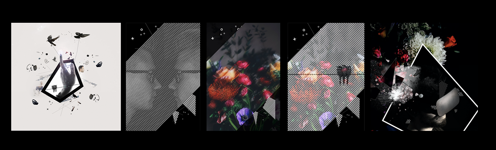

Spatialand
Brand and experience design for Spatialand, the VR platform from the founders of Prologue, acquired by Walmart's Store No 8 in 2018.

The problem
VR content was built one-off and thrown away. Spatialand set out to give brands and artists persistent destinations they could design and update themselves, and it needed an identity and interface that made that idea legible to clients who had never worn a headset.
The approach
Designed the brand and the in-headset language together, so the identity was something you could stand inside, not a logo applied to a product.
Applied the system to launch destinations, including the Linkin Park VR Destination for the One More Light World Tour on Oculus Rift and HTC Vive.
Results
Leadership
Worked with founders Kyle and Kim Cooper in a 10-person studio.